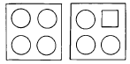
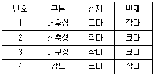
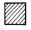
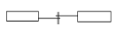
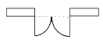
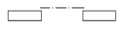
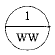
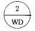
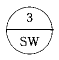
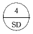

실내건축기능사 (2004-07-18 기출문제)
1과목: 실내디자인
1. 디자인 요소에서 강조(Emphasis)의 설명으로 틀린 것은?
- 강조란 시각적으로 중요한 것과 그렇지 않은 것을 구별하는 것을 말한다.
- 실내에서의 강조란 흥미나 관심의 촛점이다.
- 강조란 한 방에서의 통일과 질서감을 부여하지는 못한다.
- 주택의 거실에서 촛점의 대상이 되는 것은 벽난로나 응접셋트가 될 수가 있다.
(정답률: 47%)

2. 아래 그림에서 나타나는 형태요소는?

- 비례와 대칭
- 조화와 대조
- 통일과 변화
- 점증과 율동
(정답률: 86%)
3. 부엌가구의 배치방법 중 작업면이 넓으며 작업 효율이 가장 좋은 배치는?
- 일자형
- L자형
- 병렬형
- U자형
(정답률: 56%)
4. 주택의 각 공간에서 개인생활 공간에 속하는 것은?
- 응접실
- 거실
- 침실
- 식사실
(정답률: 96%)
5. 자연적인 형태와 가장 밀접한 관련성이 있는 형은?
- 자유곡면형
- 삼각형
- 직육면체형
- 다각형
(정답률: 88%)
6. 실내 공간의 바닥을 설계할 때 내용으로 틀린 것은?
- 신체와 직접 접촉되는 부분이므로 촉감을 고려한다.
- 바닥의 면적이 좁을 때에는 바닥에 높이차를 두어 공간을 넓게 보이게 한다.
- 노인이 있는 실내에서는 바닥의 높이차가 없는 것이 좋다.
- 바닥에 높이차를 두면 공간을 분할하는 효과가 있다.
(정답률: 80%)
7. 주택의 식당이나 레스토랑의 식탁위를 조명하는 데 가장 많이 쓰이는 조명은?
- 브라켓(bracket) 조명
- 펜던트(pendent) 조명
- 플로어 램프(floor lamp) 조명
- 핀홀 라이트(pin hole light) 조명
(정답률: 87%)
8. 다음 중 기능성이 가장 우선적으로 고려되어야 할 가구의 종류는?
- 주거용 가구
- 공공용 가구
- 상업용 가구
- 장식용 가구
(정답률: 23%)
9. 실내디자인에서 가장 중요하게 고려해야 하는 요인은?
- 물적자원 능력
- 외부환경과 기후
- 거주인에 대한 이해
- 인적자원과 노동력
(정답률: 90%)
10. 손으로 만져 보면 알 수 있는 질감을 무엇이라 하는가?
- 촉각적 질감
- 시각적 질감
- 구조적 질감
- 착시적 질감
(정답률: 98%)
11. 다음 중 대칭균형의 예로 가장 적당한 것은?
- 원형 식탁
- 스탠드 갓
- 사람의 인체
- 나선형 계단
(정답률: 47%)
12. 백화점 전시 및 계획에 관한 설명으로 옳지 않은 것은?
- 항상 신선한 느낌을 주도록 전시한다.
- 전통적인 감각을 느끼도록 디자인한다.
- 접객 부분은 밝고 편안하며 개방적이어야 한다.
- 백화점은 성격상 화려한 모습을 보여 줄 필요가 있다.
(정답률: 87%)
13. 실내에 사용되는 색채계획으로 옳지 않은 것은?
- 벽은 가장 넓은 면적이므로 안정되고 명도가 높은 색상을 선택한다.
- 바닥은 벽면보다 약간 어두우며 안정감이 있는 색상을 선택한다.
- 천장은 벽과 같거나 어두운 색을 선택한다.
- 대형가구와 커튼은 바닥, 벽, 천장과 유사색이나 그 반대색을 사용한다.
(정답률: 71%)
14. 다음 중 설계의 진행과정으로 옳은 것은?
- 설계자의 요구분석-각종 자료분석-기본설계-대안제시-실시설계
- 설계자의 요구분석-기본설계-각종 자료분석-기본설계-실시설계
- 설계자의 요구분석-기본설계-각종 자료분석-실시설계-대안제시
- 기본설계-설계자의 요구분석-각종 자료분석-실시설계-대안제시
(정답률: 72%)
15. Modular Coordination의 특성이 아닌 것은?
- 공기를 단축시킬 수 있다.
- 합리적인 설계가 이루어진다.
- 창의성이 결여될 수 있다.
- 호환성이 없다.
(정답률: 77%)
16. 자연환기에 관한 설명 중 적합하지 않은 것은?
- 자연환기는 자연의 물리적 현상을 이용한 방법이다.
- 자연환기는 중력환기와 풍력환기로 분류된다.
- 환기량을 계획적으로 정확히 유지할 수 있다.
- 보조환기장치는 환기구, 환기통, 루프 벤틸레이션, 모니터 루프(Monitor roof) 등이 있다.
(정답률: 78%)
17. 보통옷을 입고 있는 안정된 상태에서 인체에서 발산되는 열손실의 비율이 바르게 비교된 것은?
- 대류 ＞복사 ＞증발
- 복사 ＞대류 ＞증발
- 증발 ＞복사 ＞대류
- 복사 ＞증발 ＞대류
(정답률: 60%)
18. 다음 열관류율의 단위로 옳은 것은?
- Kcal/m2
- Kcal/℃
- Kcal/m2· h· ℃
- hm2℃/Kcal
(정답률: 38%)
19. 채광에 관한 내용 중 옳지 않은 것은?
- 편측창은 개방감과 전망이 좋고 통풍에 유리하다.
- 천창은 시야가 차단되므로 폐쇄된 분위기가 되기 쉽다.
- 양측창은 실의 분위기가 둘로 나누어 질 수 있다.
- 정측창은 개폐, 청소, 수리, 관리가 쉽다.
(정답률: 31%)
20. 실의 명료도가 떨어지는 원인이 아닌 것은?
- 잔향 시간이 짧을때
- 음압이 낮을때
- 소음이 있을때
- 음원에서 멀때
(정답률: 57%)
2과목: 실내환경
21. 다음 중 플라스틱 재료에 대한 설명으로 옳지 않은 것은?
- 비중이 철이나 콘크리트보다 작다.
- 성형성, 가공성이 좋아 파이프, 시트, 기구류 등에 사용된다.
- 일반적으로 투명 또는 백색이므로 안료나 염료에 의해 다양한 착색이 가능하다.
- 내후성이 좋으며 열에 의한 체적변화가 거의 없다.
(정답률: 75%)
22. 목재의 장점으로 부적당한 것은?
- 가볍고 가공이 용이하며 감촉이 좋다.
- 비중에 비하여 강도가 크다.
- 열전도율이 크고, 보온, 방한, 방서성이 좋다.
- 음의 흡수, 차단성이 크다.
(정답률: 69%)
23. 물체에 외력을 가하면 변형이 생기나 외력을 제거하면 순간적으로 원래의 형태로 회복되는 성질을 말하는 것은?
- 탄성
- 소성
- 강도
- 응력도
(정답률: 93%)
24. 대리석에 대한 설명으로 틀린 것은?
- 석회암이 변화하여 결정화한 변성암의 일종이다.
- 내화성이 크고 화학적으로 내산성은 좋지만 내알칼리성이 부족하다.
- 주성분은 탄산석회이며 치밀, 견고하다.
- 색채와 반점이 아름다워 실내장식재, 조각재로 사용된다.
(정답률: 57%)
25. 목재의 성질에 대한 설명으로 옳은 것은?
- 섬유포화점 이하에서는 함수율이 낮을수록 강도는 증가된다.
- 섬유포화 상태에서 강도가 최대이다.
- 목재의 비중은 일반적으로 절건 비중을 의미한다.
- 목재에 포함된 수분은 내구성, 가공성과는 관계가 없다.
(정답률: 54%)
26. 급경성으로 내알칼리성 등의 내화학성이나 접착력이 크고 또한 내수성이 우수하며 금속, 석재, 도자기, 글라스, 콘크리트, 플라스틱재 등의 접착에 사용되는 접착제는?
- 폴리에스테르수지 접착제
- 요소수지 접착제
- 멜라민수지 접착제
- 에폭시수지 접착제
(정답률: 82%)
27. 강을 연화하거나 내부응력을 제거할 목적으로 실시하는 것으로 고열로 가열하여 소정의 시간까지 유지한 후에 로 내부에서 서서히 냉각하는 열처리 방법은?
- 불림
- 풀림
- 담금질
- 뜨임질
(정답률: 53%)
28. 유리를 500∼600℃로 가열한 다음 특수장치를 이용하여 균등하게 급냉시킨 것으로 강도는 보통 유리의 3~5배에 이르며 파괴시 모래처럼 잘게 부서져 유리 파편에 의한 부상이 적은 유리제품은?
- 유리블록
- 자외선투과유리
- 복층유리
- 강화판유리
(정답률: 93%)
29. 내열성이 우수하고, -60∼260℃의 범위에서 안정하며, 탄력성, 내수성이 좋아 방수용 재료, 접착제등으로 사용되는 합성수지는?
- 실리콘 수지
- 페놀 수지
- 요소 수지
- 멜라민 수지
(정답률: 73%)
30. 다음 중 합판에 대한 설명으로 옳지 않은 것은?
- 단판(veneer)인 박판을 짝수로 섬유방향이 평행하도록 접착제로 겹쳐 붙여 만든 것이다.
- 함수율 변화에 의한 신축변형이 적다.
- 곡면가공을 하여도 균열이 생기지 않고 무늬도 일정하다.
- 표면가공법으로 흡음효과를 낼 수가 있고 의장적 효과도 높일 수 있다.
(정답률: 62%)
3과목: 실내건축재료
31. 변성암의 일종으로 석질이 불균일하고 다공질이며 주로 특수실내장식재로 사용되는 석재는?
- 질석
- 펄라이트
- 활석
- 트래버틴
(정답률: 81%)
32. 시멘트의 분말도에 대한 설명 중 틀린 것은?
- 분말도의 시험은 체분석법, 피크노메타법, 브레인법 등이 있다.
- 분말이 미세할수록 수화작용이 빠르다.
- 분말이 미세할수록 강도의 발현속도가 빠르다.
- 분말이 과도하게 미세한 것은 풍화되기 어렵고 사용후 균열이 발생하지 않는다.
(정답률: 79%)
33. 다음 미장재료에 대한 설명 중 옳지 않은 것은?
- 돌로마이트 플라스터는 건조 경화시 수축에 의한 균열이 많다
- 혼합석고플라스터는 석고플라스터 중에서 가장 많이 쓰인다.
- 석고보드의 주원료는 소석회이다
- 킨즈시멘트는 고온소성의 무수석고를 특별한 화학처리를 한 것으로 경화 후 아주 단단하다.
(정답률: 20%)
34. 점토의 비중에 대한 설명으로 옳은 것은?
- 불순물이 많은 점토일수록 크다.
- 보통은 2.5∼2.6 정도이다.
- 알루미나분이 많을수록 작다.
- 고알루미나질 점토는 비중이 1.0 내외이다.
(정답률: 63%)
35. 콘크리트에 사용하는 바다모래가 염분 함유 한도를 초과하는 경우 조치 방법으로 잘못된 것은?
- 피복두께를 증가시킨다.
- 방청제를 사용한다.
- 아연도금철근을 사용한다.
- 물시멘트비를 크게 한다.
(정답률: 48%)
36. 다음 중 차단 재료에 요구되는 성능으로 가장 중요한 것은?(오류 신고가 접수된 문제입니다. 반드시 정답과 해설을 확인하시기 바랍니다.)
- 역학적 성능
- 물리적 성능
- 화학적 성능
- 감각적 성능
(정답률: 32%)
37. 다음 목재의 심재와 변재를 비교한 내용 중 잘못된 것은?

- 1
- 2
- 3
- 4
(정답률: 70%)
38. 강당, 집회장 등의 음향조절용으로 쓰이거나 일반건물의 벽 수장재로 사용하여 음향효과를 거둘 수 있는 목재 가공품은?
- 코펜하겐 리브
- 파키트리 패널
- 테라코타
- 플로링 보드
(정답률: 80%)
39. 콘크리트 강도에 가장 큰 영향을 주는 것은?
- 골재의 입도
- 물-시멘트비
- 시멘트의 강도
- 슬럼프값
(정답률: 80%)
40. 콘크리트의 장점이 아닌 것은?
- 자유로운 형태를 만들 수 있다.
- 큰 부재가 가능하고 구조용재로 사용한다.
- 응결시간보다 경화시간이 짧다.
- 다른 재료와 혼합하여 결점을 보완하거나 개선할 수 있다.
(정답률: 60%)
41. 그림과 같은 재료 구조 표시 기호는?

- 목재치장재
- 석재
- 인조석
- 지반
(정답률: 56%)
42. 다음의 평면표시기호 중 쌍여닫이문의 표시기호는?



(정답률: 88%)
43. 선의 종류 중 이점쇄선의 용도는?
- 외형선
- 인출선
- 치수선
- 상상선
(정답률: 77%)
44. 기초평면도에 표기하는 사항이 아닌 것은?
- 기초의 종류
- 앵커볼트의 위치
- 마루밑 환기구 위치 및 형상
- 기와의 치수 및 잇기방법
(정답률: 53%)
45. 두 방을 한 방으로 크게 할 때나 칸막이 겸용으로 사용하는 문은?
- 접이문
- 널문
- 양판문
- 자재문
(정답률: 65%)
46. 벽돌쌓기에 있어 줄눈에 관한 설명 중 옳지 않은 것은?
- 벽돌과 벽돌사이의 모르타르 부분을 줄눈이라 한다.
- 수평을 가로줄눈, 수직을 세로줄눈이라 한다.
- 세로줄눈의 위아래가 막힌 것을 막힌줄눈이라 한다.
- 통줄눈은 위에서 오는 하중을 균등하게 밑으로 전달 시킬 수 있어 좋다.
(정답률: 43%)
47. 철근콘크리트 구조의 형식에서 라멘(Rahman)구조에 대한 설명으로 옳은 것은?
- 보를 설치하지 않고 실내공간을 넓게 한다.
- 기둥과 보를 서로 연결하여 하중을 부담시킨다.
- 판상의 벽체와 바닥 슬래브를 일체적으로 구성한다.
- 곡면 바닥판을 이용하여 간사이가 큰 구조를 형성한다.
(정답률: 47%)
48. 창문틀의 좌우에 수직으로 세워댄 틀은?
- 밑틀
- 웃틀
- 선틀
- 중간틀
(정답률: 55%)
49. 계단에 대치되는 경사로의 경사도는 얼마가 적당한가?
- 1/8
- 1/7
- 1/6
- 1/5
(정답률: 26%)
50. 철골구조에 대한 설명 중 틀린 것은?
- 철골구조는 재료에 의해 보통형강구조, 경량철골구조, 강관구조, 케이블구조 등으로 나눌 수 있다.
- 고층건물에 적합하고 스팬을 길게 할 수 있다.
- 내화력이 약하고 녹슬 염려가 있어, 피복에 주의를 기울여야 한다.
- 본질적으로 조립구조이므로 접합에 유의할 필요가 없다.
(정답률: 67%)
4과목: 건축일반
51. 철근콘크리트 보에서 늑근의 주된 사용 목적은?
- 압축력에 대한 저항
- 인장력에 대한 저항
- 전단력에 대한 저항
- 휨응력에 대한 저항
(정답률: 43%)
52. 목조 벽체에서 외력에 의하여 뼈대가 변형되지 않도록 대각선 방향으로 배치하는 빗재는?
- 처마도리
- 가새
- 층보
- 샛기둥
(정답률: 80%)
53. 보강블록조에서 내력벽으로 둘러싸인 부분의 바닥 면적은 얼마를 넘지 않도록 하여야 하는가?
- 60m2
- 80m2
- 100m2
- 120m2
(정답률: 31%)
54. 다음 중 구조체인 기둥과 보를 부재의 접합에 의해서 축조하는 방법으로, 목구조, 철골구조 등이 해당되는 구조는?
- 가구식구조
- 조적식구조
- 아치구조
- 일체식구조
(정답률: 73%)
55. 난간의 웃머리에 가로대는 가로재로 손스침이라고도 불리우는 것은?
- 난간동자
- 난간두겁
- 챌판
- 엄지기둥
(정답률: 35%)
56. 다음 중 목재창의 표시 방법은?




(정답률: 54%)
57. 래티스보에 접합판(Gusset Plate)을 대서 접합한 보는?
- 허니콤보
- 격자보
- 플레이트보
- 트러스보
(정답률: 43%)
58. 블록조에서 테두리보의 설치 이유가 아닌 것은?
- 수직균열을 막기 위하여
- 벽체 한 부분에 하중을 집중시키기 위하여
- 세로철근의 끝을 정착시키기 위하여
- 분산된 벽체를 일체로 연결하기 위하여
(정답률: 68%)
59. 다음 중 창호도에 표기되는 내용이 아닌 것은?
- 개폐방법
- 기초
- 재료
- 마감
(정답률: 49%)
60. 다음 중 건축물의 주요 구조부의 조건과 가장 관계가 먼 것은?
- 각종 하중에 대해 강도와 강성을 가져야 한다.
- 지역의 인구밀도를 고려하여야 한다.
- 내구성을 갖추어야 한다.
- 단열, 방수, 차음 등 차단성능을 확보하여야 한다.
(정답률: 93%)